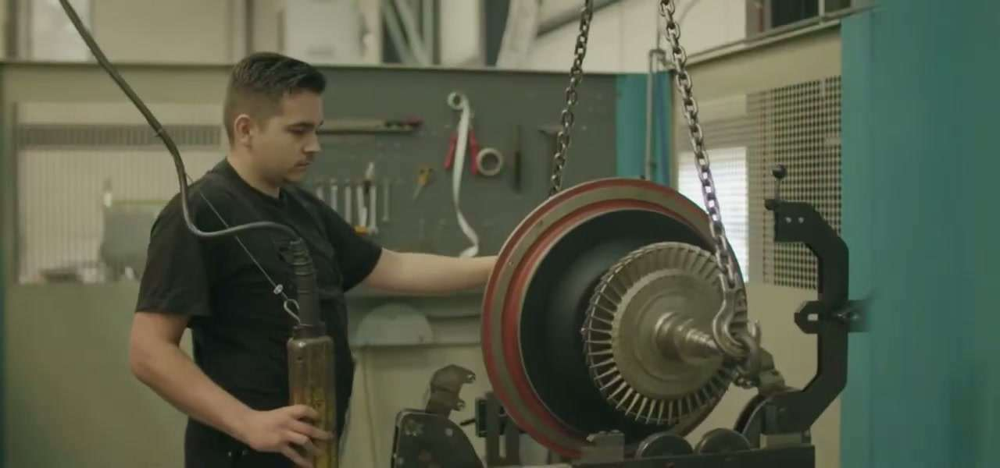
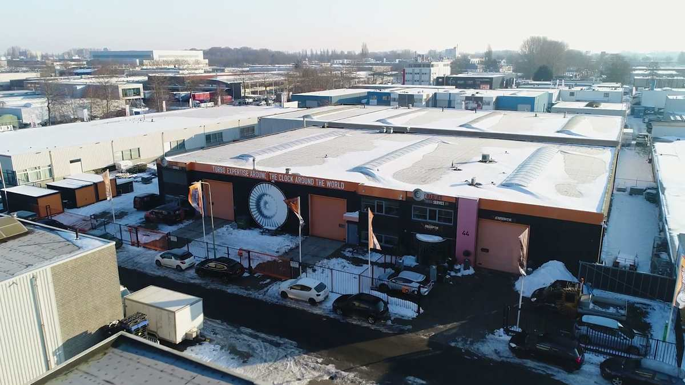

O documento é bom demais para a empresa que assina.
Quatro PDFs, duas planilhas e cinco vídeos chegaram por WhatsApp propondo uma unidade industrial de R$ 65 milhões no Complexo de Suape. Tudo foi convertido, lido integralmente, cruzado entre si e confrontado com registro público em quatro países.
Onze documentos, três idiomas, nenhuma costura
O material não foi produzido como conjunto. São peças feitas por pessoas diferentes, em momentos diferentes, com premissas nunca reconciliadas.
É dessa falta de reconciliação que nascem quase todos os confrontos adiante. Não há sumário executivo, não há apresentação institucional e não há nenhum contrato.
| Documento | Idioma | Natureza | Avaliação |
|---|---|---|---|
| Memorial descritivo33 páginas, assinado por Docusign | PT | Peça regulatória para Suape | Tecnicamente competente |
| ROI Draaijer11 abas, 4 cenários, 20 trimestres | EN | Modelo financeiro de 5 anos | Metodologicamente honesto |
| OPERATIVA 1, 2 e 3cerca de 50 contas nomeadas | PT | Listas de prospecção | Útil, mas qualitativo |
| Lista de leads16 plantas, 72 motores, 131 turbos | ES | Base instalada mapeada | Honesta sobre incerteza |
| 5 vídeos institucionais5 min 20 s, legendas queimadas | EN | Material da Draaijer | Profissional, mas europeu |

A capacidade técnica é real, e está filmada
Os cinco vídeos mostram jateamento, solda TIG, usinagem, metrologia e balanceamento certificado em máquina SCHENCK, além de serviço embarcado em navio. Isso não é encenação. É o ativo mais sólido de todo o material recebido, e precisa ser dito com a mesma clareza das críticas que vêm a seguir.
Uma é real e menor do que diz. A outra quase não existe.
Nenhum documento da pasta descreve as duas empresas com dado verificável. Fomos buscar na Receita Federal, na Câmara de Comércio holandesa, no registro mercantil espanhol e no tribunal comercial camaronês.
ADET Capital and Projects
CNPJ 60.465.918/0001-38 · Recife
| Abertura | 20/04/2025 |
| Idade | 15 meses |
| Capital social | R$ 50.000 |
| Porte | Microempresa |
| CNAE principal | Intermediação |
| CNAE industrial | Nenhum |
| Sócios | 1, sem outra empresa |
| Projetos entregues | Nenhum |
| Menções em imprensa | Nenhuma |
O achado central. O site da própria empresa não descreve uma empresa de projetos industriais. Descreve um escritório de advocacia: "a boutique international law firm". Google Maps e Facebook classificam como Corporate Law Firm. Em nenhuma página há a palavra turbocompressor, engenharia ou Suape.
Draaijer Turbo Services B.V.
KvK 51087308 · Dordrecht
| Fundação | 2010 |
| Situação | Ativa, sem passivos |
| Grupo | 15 a 30 pessoas |
| Oficina de Dordrecht | 600 m² |
| Balanceamento máximo | 500 kg |
| ISO 9001 | Não encontrada |
| Aprovação de classe | Não encontrada |
| Clientes nomeados | 1, ferroviário |
| Presença na América do Sul | Nenhuma |
O achado central. A página de contato dela, atualizada em 31/03/2026, declara onde opera: "Our teams in the Netherlands, Spain, and West Africa". O Brasil não está na lista. Nenhuma página dela menciona Brasil, Suape ou ADET. Nenhuma página da ADET menciona a Draaijer.
Seja justo com as duas
Nada disso prova má-fé. Sociedade de propósito específico recém-aberta é o veículo normal de um projeto, capital baixo não impede captação, e site ruim não diz nada sobre competência industrial. A Draaijer é competente de verdade. O que pesa é a convergência, não nenhum item isolado.
ADET Capital & Projects
A empresa que reuniu, organizou e apresentou todo o material analisado neste dossiê. Tudo abaixo vem de registro público: Receita Federal, tribunal de justiça e o próprio site institucional.
| Registro | Dado | Observação |
|---|---|---|
| Razão social | ADET Capital and Projects Ltda | ativa |
| CNPJ | 60.465.918/0001-38 | Receita Federal |
| Abertura | 20/04/2025 | quinze meses de existência |
| Capital social | R$ 50.000 | porte microempresa |
| CNAE principal | 74.90-1-04 | intermediação e agenciamento de negócios, sem CNAE industrial |
| Quadro societário | sócio único | Eduardo Henrique Torres Neves, desde a constituição |
| Endereço do CNPJ | Ilha do Leite, Recife | Av. Gov. Agamenon Magalhães, 4779, sala 301 |
| Endereço no site | Pina, Recife | Av. Antônio de Goes, 60. Dois endereços em circulação |
Eduardo Henrique Torres Neves
O site apresenta o fundador como Eduardo Torres, com biografia de nascimento na Espanha, formação nos Países Baixos e experiência acumulada na Europa e na América Latina, atendendo clientes em energia, tecnologia, indústria e finanças. Agregador de dados cadastrais registra faixa etária de 25 a 29 anos.
Não é acusação, é aritmética: uma carreira internacional consolidada em vários setores é difícil de acomodar nessa faixa. É verificação documental simples de pedir e que ainda não foi feita.
O registro confirma que ele não figura em nenhuma outra empresa. A ADET é, publicamente, seu primeiro e único empreendimento formal, e não foi localizado histórico profissional público anterior a abril de 2025 nem menção em imprensa em qualquer contexto.
Escritório de advocacia sem registro na OAB
O site declara textualmente que a ADET é "a boutique international law firm" e apresenta o fundador como advogado. Os três serviços do menu são jurídicos, e Google Maps e Facebook classificam a empresa como escritório de advocacia.
Nenhum registro na OAB foi encontrado para o nome completo. Existe um "Eduardo Henrique Teixeira Neves, OAB 30630/PE", mas é nome diferente e não há base para presumir identidade.
Projetos industriais ou advocacia
O memorial descreve a ADET como empresa de "estruturação, desenvolvimento e execução de projetos industriais". O site da própria empresa se descreve como escritório internacional de advocacia.
O CNAE reforça o segundo: 74.90-1-04, intermediação e agenciamento. Pelo registro, a empresa está habilitada a intermediar, não a executar obra industrial.
Situação judicial do sócio, em fonte pública
| Processo | Parte contrária | Assunto | Polo | Situação |
|---|---|---|---|---|
| 0104083-59.2025.8.17.2001TJPE, Recife, primeiro grau | Rio Ave Investimentos Ltda | Locação de imóvel | Réu | ativo, última movimentação em 17/04/2026 |
| 0077804-36.2025.8.17.2001TJPE, Recife, primeiro grau | Sergio Pedro Xavier Neto | Locação de móvel | Réu | ativo, última movimentação em 22/06/2026 |
Nada aqui é criminal
As duas ações são cíveis e tratam de contrato de locação. Não foi encontrado nenhum processo criminal, trabalhista, fiscal, de execução ou de falência em nome dele ou da empresa. Ação de locação com pessoa física no polo passivo é litígio corriqueiro e não indica ilícito.
A busca é por nome, não por CPF
As bases agrupam processos por nome, e o CPF não é público. A coincidência é forte, pois são o mesmo nome completo, a mesma cidade e o mesmo período. Ainda assim é indício, não prova de identidade, e a confirmação só sai de certidão nominal com CPF.
Verificar antes, não depois
Certidão nominal com CPF, comprovação de inscrição na OAB e confirmação do endereço de sede são três documentos que se pedem em qualquer negociação séria. Custam nada e resolvem tudo o que está em aberto nesta seção.
A leitura justa sobre a intermediária
Uma empresa de quinze meses, com capital de cinquenta mil reais e sócio único sem histórico profissional público, apresentando um projeto de quarenta e cinco a sessenta e cinco milhões de reais. A desproporção é o fato, e ela não desaparece por interpretação.
Nada disso prova má-fé, e este documento não afirma que exista. Capital baixo não impede captação, sociedade de propósito específico costuma nascer assim, e empresa nova precisa de um primeiro projeto. O que a desproporção exige é estrutura de garantia: marcos de pagamento atrelados a entrega verificável, contato direto e independente com a matriz em Dordrecht, e as três certidões acima antes de qualquer assinatura.
"Eles querem vir ao Brasil e me mandaram aqui"
Essa afirmação foi investigada em fontes holandesas, espanholas, inglesas e portuguesas. Ela não apenas carece de prova: é contradita ativamente pelo que a própria Draaijer publica sobre si mesma.
| O que se afirma | O que o registro mostra | Veredito |
|---|---|---|
| A Draaijer quer vir ao Brasil | A página "About us" dela, atualizada em 02/04/2026, diz "oficinas na Holanda, Espanha e África Ocidental" e "todas as nossas três localizações". | Contradito |
| É movimento estratégico | Em janeiro de 2026 publicou press release formal para abrir oficina em Málaga, a 900 km de Tarragona, dentro do mesmo país. Se Málaga merece comunicado, um continente novo mereceria mais. | Contradito |
| Já atua na América do Sul | A única menção foi verificada: post de junho de 2024 sobre o despacho de um turbo Napier 297 do estoque de Dordrecht para um navio com pane. Comércio de reposição, não implantação. | Invertido |
| Tem estrutura internacional | A "subsidiária espanhola" não é subsidiária. Capital de 4.500 euros, com uma pessoa física holandesa como administrador e sócio único de 2021 a 2024. Campo "Empresa Matriz" vazio. | Refutado |
| Tem capacidade financeira | Esse braço teve, em 2024: vendas -24,9%, EBIT -270%, ROE -53,7%, ativo total -47%, com dois funcionários. A matriz recorreu ao auxílio emergencial holandês em 2020. | Refutado |
Colapso do único braço internacional
Draaijer Turbo Service Spain SL · 2024 · INFORMA D&BComo fechar isso em um dia
O ônus da prova é de quem afirma. Peça o contrato, a procuração ou a carta de nomeação, em papel timbrado e com assinatura identificável. E, em paralelo, escreva direto para info@draaijerturboservice.nl ou ligue para +31 78 617 1917 com uma pergunta objetiva: esta pessoa representa a Draaijer no Brasil?

O terreno é mata
A foto aérea estava embutida no PDF em baixa resolução. Foi recuperada e ampliada. A área é predominantemente vegetação densa, com uma clareira de pasto ao centro, à beira de rodovia duplicada. Supressão de vegetação exige autorização própria e pode gerar compensação ambiental, e o memorial não menciona isso em nenhum ponto.
A melhor peça técnica do conjunto
A descrição de processo do memorial é detalhada e escrita por quem conhece equipamento rotativo. O problema não está no que se descreve, está em quem descreve e nos números que sustentam.
Cronograma físico-financeiro, reconstruído
estava embutido como imagem de 694 px no PDFOnde o dinheiro vai
memorial, seção 5.1O que o cronograma revela
O licenciamento ambiental tem janela de três meses. Para atividade com jateamento abrasivo, efluente oleoso, solvente industrial e resíduo classe I, é premissa agressiva. E o terreno, como a foto aérea mostra, é mata.
A fase 1 concentra 95% de todo o investimento, com apenas 5% reservados à expansão que justifica o hectare extra de área pedido.
Note ainda a ordem: as obras civis consomem 40% do capital antes de existir um único contrato de cliente assinado. É o inverso da sequência que reduz risco.

500 quilos
É a capacidade máxima de balanceamento que a própria Draaijer declara. As plantas âncora do projeto operam ABB TPL77-A30, de 3.511 kg. Todo concorrente que se posiciona para geração de energia publica de 2.000 a 5.000 kg.
A menor máquina do grupo comparável
Capacidade de balanceamento não acompanha número de pessoas, acompanha investimento em equipamento. Uma empresa não compra uma balanceadora cinco vezes maior por vaidade.
Capacidade de balanceamento contra credencial formal
tamanho da bolha proporcional ao número de funcionáriosO argumento mais duro
A Turbo 10 tem dez funcionários e balanceia dez vezes mais massa. É o ativo físico que define o que entra na oficina, e nenhum discurso comercial contorna isso.
A ressalva honesta
Balanceia-se o rotor, não a unidade montada, e não foi possível obter o peso do rotor de um TPL77 em fonte confiável. Isso não é prova cabal, e seria desonesto apresentá-la como tal.
E o que explica os 500 kg
A Draaijer expõe no HortiContact, feira de estufas. Cogeração de estufa roda motores de 1 a 4 MWe, com turbos pequenos. O equipamento é dimensionado para o mercado real dela.

O envelope real da empresa
Navegação interior no corredor Amsterdã, Roterdã e Antuérpia. Cogeração de estufa holandesa. Ferrovia africana, com um cliente confirmado: CAMRAIL, via o grupo Africa Global Logistics. Atendimento de emergência em porto.
Nesse escopo ela parece competente e rápida, que é a proposta de valor real dela, a prontidão 24 horas.
Ela é excelente no envelope dela. O envelope não é usina térmica de 380 MW com motores Wärtsilä 46.
A parte que se sustenta
Isto precisa ser dito com a mesma clareza das críticas: existe demanda real, o momento regulatório é favorável, e há um argumento comercial forte que ninguém no material percebeu.
O argumento que ninguém usou
O leilão de reserva de capacidade de 2026 contratou térmica a óleo e diesel com contratos de apenas três anos e operação declaradamente flexível. Usina flexível parte e para muitas vezes, e ciclagem térmica é o principal acelerador de fadiga em roda de turbina e mancal, mais do que horas acumuladas em regime estável.
Ou seja: a transição energética brasileira não está matando o mercado de manutenção, está intensificando a manutenção por MW instalado. E contrato de disponibilidade com penalidade torna o dono da usina muito mais sensível a parada do que era no modelo antigo de PPA de energia.
Onde está a margem, e por que ela não pede fábrica
Receita de referência e margem bruta por linha de serviço
aba Service Mix do modelo financeiro do próprio projetoAs duas linhas de maior margem, emergência e engenharia, somam US$ 65 mil de receita de referência contra US$ 240 mil das outras duas. São justamente as que menos precisam de fábrica e as que mais dependem de estoque e tempo de resposta. É o argumento central contra o CAPEX proposto.
| Empresa | Desde | Pessoas | Porte e faturamento | Américas | Credencial |
|---|---|---|---|---|---|
| Accelleronex ABB Turbocharging | 2022 | 600+ | 100+ estações em 50+ países | Sim | Fabricante |
| MAN PrimeServ | n/a | n/d | Rede global | Macaé, Petrópolis | Fabricante |
| TSI Turbo Service Intl90% da receita fora do Reino Unido | 1989 | 51 | GBP 19,0 mi (2024) | Houston | ABS, RINA, LRQA |
| PJ Circular Engineering | 1979 | 37 | DKK 71,5 mi (2025) | Não | Programa KBB |
| Turbo Cadiz3.480 m², balanceia 3.000 kg | 1986 | 23 | EUR 3 a 6 mi | Não | MAN e ABB, tríplice ISO |
| Marine Turbo EngineeringISO 9001 desde 1993 | 1970 | 17 | Oficinas em UK, Panamá, Índia, Singapura | Atende "Brazil, Rio" | Lloyd's, DNV, ABS, GL |
| Draaijer600 m², balanceia 500 kg | 2010 | 15 a 30 | não divulgado | Nenhuma | Nenhuma encontrada |
Correção de uma afirmação anterior desta análise
Uma versão anterior afirmou que a TSI operava sem nenhuma aprovação de classe, e usou isso para suavizar o risco. Estava errado. A página de credenciais dela traz ABS até 2027, RINA e RINA UK, LRQA e certificados Napier. Nenhum par europeu confirmado opera sem credencial. A Draaijer é a exceção do grupo, não a regra.
E uma correção a favor da Draaijer
Descrevi o porte dela como fragilidade. Os números mostram que 15 a 30 pessoas é o tamanho normal do setor. A Marine Turbo, de 1970 e com quatro aprovações de classe, tem 17 funcionários. E a TurboNed, maior independente holandês da história, tinha 80 e faliu em 2012. O problema de escala não está no parceiro. Está no projeto.

Agora a parte desconfortável
Até aqui, tudo que foi mostrado tem lastro. O que vem a seguir são as onze contradições entre o que o material afirma e o que os dados primários mostram. Cada uma tem fonte e cada uma foi checada duas vezes.
Onze confrontos
À esquerda, o que o material afirma. À direita, o dado que refuta. Nenhum foi inventado: todos saem do cruzamento entre os próprios documentos, ou entre eles e o registro público.
O fator de carga da planta que vale 60% do modelo
premissa contra despacho declarado pela própria usinaQuanto custa o projeto
Contradição internaCAPEX da fase 1, até R$ 100 milhões com expansão. Galpão de 7.000 m², pontes rolantes de 25 toneladas, laboratório de metrologia.
Memorial descritivo, seção 5.1Capex inicial do cenário Base no modelo financeiro do próprio projeto. Cerca de 4 milhões de reais, compatível com escritório, ferramental e estoque modesto.
ROI Draaijer, aba Scenario InputsQuanto vai faturar
Aritmética impossívelA partir do terceiro ano, podendo superar R$ 60 milhões na maturidade, com margem EBITDA de 25% a 40%.
Memorial descritivo, seção 5.1É o mercado anual total das cinco plantas do modelo, somando 62 turbos. Para bater a meta seria preciso capturar de 62% a mais de 100% de tudo.
Cálculo reconstruído das fórmulas do próprio modeloCapacidade contra demanda
Ociosidade estruturalCapacidade na fase inicial, até 240 na expansão, com 10 a 16 unidades em intervenção simultânea.
Memorial descritivo, seção 2.7Demanda natural dos 131 turbos mapeados, com ciclo de overhaul de 3 anos. A fonte técnica do modelo cita intervalo de até 75.000 horas, que passa de 8 anos.
Lista de leads cruzada com fonte WärtsiläO que a empresa proponente faz
Identidade contraditória"Estruturação, desenvolvimento e execução de projetos industriais, com foco em ativos estratégicos e infraestrutura técnica."
Memorial descritivo, seção 1.1"ADET Capital & Projects is a boutique international law firm." Os três serviços do menu são jurídicos. Google Maps e Facebook classificam como Corporate Law Firm.
adetcapital.comCapacidade financeira do proponente
DesproporçãoInvestimento proposto formalmente à autoridade portuária, com cronograma físico-financeiro em sete fases.
Memorial assinado por DocusignCapital social integralizado, registrado na Receita Federal. Porte microempresa. Equivale a 0,08% do investimento anunciado.
Base pública da Receita FederalO padrão internacional de qualidade
Credencial ausenteO memorial promete conformidade com "normas ISO, API e requisitos dos fabricantes", com padrão equivalente a centros internacionais de referência.
Memorial descritivo, seção 2.1Não foi encontrada ISO 9001 nem aprovação como service supplier por DNV, ABS, BV, Lloyd's, RINA ou ClassNK para a Draaijer, em nenhum canal.
Site, LinkedIn, anúncios, listas de expositoresO tamanho do equipamento a atender
Limite físicoPeso máximo por equipamento no memorial. As plantas âncora operam ABB TPL77-A30, de 3.511 kg cada, conforme datasheet oficial da ABB.
Memorial, seção 2.7, e lista de leadsCapacidade máxima de balanceamento declarada pela própria Draaijer. É a menor de todo o grupo comparável.
draaijerturboservice.nl, seção ServicesA parceria internacional
Sem corroboração"Parceria técnica internacional da Draaijer Turbo Service, garantindo transferência de tecnologia, know-how especializado e padrões internacionais."
Memorial descritivo, seção 1.1and West Africa"
Lista completa de onde a Draaijer declara operar, na página atualizada em 31/03/2026. O Brasil não aparece.
draaijerturboservice.nlO equipamento da planta âncora
Conflito sinalizadoModelo de motor de Suape II conforme o datasheet técnico fornecido ao elaborador do modelo financeiro.
Datasheet do usuário, fonte S1Configuração declarada pela fonte pública oficial da Wärtsilä, no comunicado do contrato de operação e manutenção da planta.
wartsila.com, 01/03/2012A maior oportunidade mapeada
OmissãoUniverso do modelo financeiro, restrito a Pernambuco: Termocabo, Refrescos, Petrolina, Coca-Cola e Suape II.
ROI Draaijer, aba Plant EconomicsBorborema Energética, em Campina Grande, com 20 motores Wärtsilä W32. É a maior contagem individual de toda a base de leads.
Lista de leads do próprio projetoO regime de operação da planta âncora
Premissa invertidaO modelo atribui a Suape II o fator mais alto da carteira, assumindo que opera 15% mais pesado que uma fábrica de bebidas em regime contínuo.
ROI Draaijer, aba Plant EconomicsDespacho real da UTE Suape II em 2019, gerando 282.320 MWh. Em 2018 foram 21,6%. É usina de reserva, não de base.
Demonstração financeira da própria usinaDezesseis riscos, quatro em vermelho
Matriz severidade por probabilidade, escala de 1 a 5. Isto é triagem de risco, não aconselhamento jurídico, e exige revisão por advogados nas especialidades apontadas.
Horizontal: probabilidade. Vertical: severidade. Os números identificam cada risco na carteira completa.
R-01 · Sem certificação de classificadora
Probabilidade 5 porque é estado atual. Severidade restaurada para 5 depois que a verificação mostrou que a TSI tem ABS e RINA. Nenhum par confirmado opera sem credencial.
R-16 · Teto de balanceamento de 500 kg
O parceiro declara 500 kg. As plantas âncora operam ABB TPL77, de 3.511 kg. É o ativo físico que define o que entra na oficina.
R-02 · Licenciamento subdimensionado
Três meses para licenciar jateamento, efluente oleoso e resíduo classe I, em terreno com vegetação densa e sem menção a supressão vegetal.
R-03 · O&M incumbente bloqueando o cliente
A Wärtsilä opera as plantas âncora com garantia de desempenho. Intervenção de terceiro costuma invalidar garantia. O dono pode não ter liberdade jurídica para contratar.
R-04 · Responsabilidade civil por falha
O memorial usa R$ 300 a 500 mil por dia de parada como argumento de venda. O mesmo número é o passivo potencial.

131 turbocompressores já estão mapeados. Nenhum foi qualificado.
O que segue é o que fazer com a base de leads que já existe. É a parte acionável deste dossiê, e independe de o projeto de R$ 65 milhões avançar ou não.
Ranking de potencial
Pontuação de 0 a 100 combinando quatro fatores: quantidade de turbos, acessibilidade jurídica, proximidade e existência de gatilho comercial ativo. Contas sob contrato de operação e manutenção de terceiro perdem pontos porque o dono da usina pode não ter liberdade para contratar.
Onde estão, contra a distância de Suape
A linha do tempo que ninguém montou
Nenhum desses contratos foi verificado em 2026. A janela do Termocabo é a mais concreta da carteira e custa um telefonema.
Dois gatilhos públicos que ninguém usou
A multa que a ANEEL manteve
A Energética Suape II foi autuada e multada em R$ 142.574,99, com a penalidade mantida em julgamento pela diretoria da ANEEL, por operação e manutenção inadequada da usina.
Uma planta já penalizada por manutenção inadequada tem sensibilidade demonstrada, documentada e pública ao tema. A abordagem não precisa vender o conceito, só apresentar a solução.
O PPA que venceu em 2025
O contrato de operação e manutenção da Wärtsilä com a Termocabo, assinado em abril de 2022, tinha validade explicitamente amarrada ao vencimento do PPA em 2025.
Estamos em julho de 2026. O status é desconhecido, e essa é uma verificação de custo quase zero que pode abrir ou fechar a porta da conta mais próxima de Suape.
A própria base avisa onde não confiar
Das 16 linhas da base, apenas cinco são de alta confiança. Nove são médias e duas baixas. A planilha alerta, com todas as letras, que células de confiança média e baixa devem ser validadas contra placa do turbo, manual do fabricante ou inspeção em planta.
Os 40 turbos de Borborema, o maior lead da carteira, estão entre os de confiança média. Validar essa contagem é a verificação de maior retorno sobre esforço de toda a lista.
Três trilhas, três mensagens
Penalidade por indisponibilidade
Suape II, Termocabo, Petrolina, Borborema, Camaçari. Fala-se de ciclagem térmica e de multa contratual, não de preço de hora.
Cerca de 118 dos 131 turbos
Parada de linha
Coca-Cola, Refrescos, Coteminas, MRN, REMAN. O turbo não gera receita, sustenta produção. O argumento é previsibilidade, não emergência.
Cerca de 30 turbos, e a referência do modelo
Tempo de resposta local
Estaleiros, rebocadores, terminais. Maior potencial de volume e o único segmento bloqueado por pré-requisito: aprovação de classificadora.
Não prospectar antes de resolver a certificação
A sequência que destrava o pipeline
Cada passo alimenta o seguinte. Fora de ordem, produz reunião sem fechamento, que é o desperdício mais caro em venda técnica de ciclo longo.
O modelo que muda a margem
Oficina vende hora de bancada e compete por preço. Pool de unidades de intercâmbio vende disponibilidade: o cliente recebe uma unidade revisada na hora e entrega a dele. O downtime cai de dias para horas, a receita vira contrato, e o cliente fica preso ao pool. É o mesmo orçamento de estoque com finalidade diferente.
- Verificar quem opera cada ativo. Decide se a conta é sequer acessível. Sob contrato com garantia de desempenho, o interlocutor passa a ser a operadora.
- Contar turbos por conta. É o que transforma nome em mercado dimensionado.
- Estimar gasto anual por conta. A âncora atual é de US$ 76.250 por turbo por ano, derivada de um único relatório que não está na pasta.
- Mapear o decisor técnico. Engenheiro de confiabilidade primeiro, comprador por último. O comprador trava, o engenheiro inicia.
- Segmentar a mensagem em três trilhas. E não abrir a naval antes da certificação.
- Ancorar uma conta com contrato plurianual. Um contrato assinado vale mais, como argumento de captação, que qualquer projeção.
Isto deve ser levado a sério?
A oportunidade, sim.
O dossiê, com reservas.
O proponente, não até que se verifique.
O padrão que emerge é o de uma operação de originação e intermediação, que é literalmente o que o CNAE da proponente declara. Isso não é necessariamente ilegítimo. O problema é a assimetria de informação: o memorial apresenta como fato consolidado uma parceria sem contrato, um padrão de qualidade sem certificação e uma capacidade financeira que o registro público não confirma.
O que é sólido
- O mercado existe. São 131 turbos mapeados, o parque térmico do Nordeste é real, e o leilão de 2026 recontratou óleo e diesel.
- A tese de proximidade é correta. Não há estação Accelleron em Pernambuco.
- A Draaijer é tecnicamente competente dentro do envelope dela, e os vídeos provam.
- A descrição técnica do memorial é boa, escrita por quem entende de equipamento rotativo.
- O modelo financeiro é metodologicamente honesto: declara premissas e sinaliza conflito de dado.
O que não se sustenta
- Proponente de 15 meses, R$ 50 mil de capital, CNAE de intermediação, site que se declara escritório de advocacia.
- A parceria não tem contrato na pasta nem corroboração pública, e o parceiro declara não operar no Brasil.
- O parceiro balanceia 500 kg. As plantas âncora operam turbos de 3.511 kg.
- O CAPEX do memorial é 10 a 15 vezes o do modelo financeiro.
- O faturamento prometido exige capturar mais de 100% do mercado modelado.
- A capacidade projetada é 3 a 4 vezes a demanda mapeada.
O teste decisivo, em uma semana
Escreva para a Draaijer
info@draaijerturboservice.nl
+31 78 617 1917
Uma pergunta: existe acordo, mandato ou representação com a ADET Capital?
Certidão na JUCEPE
Contrato social, objeto por extenso, alterações e eventual aumento de capital. É definitiva sobre o que a empresa pode fazer.
Peça os certificados
ISO 9001, aprovação de classe, e a placa da balanceadora com certificado de calibração e capacidade nominal.
Se for seguir mesmo assim
Há um caminho, e ele é o inverso do que está no memorial. Não comece pela fábrica. Comece pela operação leve que o próprio modelo financeiro descreve, com US$ 750 mil: estoque de intercâmbio, equipe de campo, prontidão e uma âncora contratual.
Prove a demanda com contrato assinado, e só então construa os 7.000 m².
Nessa ordem, o risco cai a cada etapa, o CAPEX vira consequência de demanda comprovada, e o primeiro confronto deste dossiê deixa de ser um problema e vira o plano.
Análise independente produzida em 27 de julho de 2026, a partir de 11 documentos recebidos, convertidos e lidos integralmente, mais 77 fontes externas e quatro investigações em registro público de quatro países. Fontes primárias: Receita Federal, KvK, BORME, INFORMA D&B, Companies House, CVR dinamarquês, ANEEL, EPE, CCEE, Suape, SEFAZ-PE, CPRH, Wärtsilä, Accelleron, ABB, DNV, ABS e RINA. Não é aconselhamento jurídico nem recomendação de investimento. Os dados societários e contratuais precisam de confirmação atual antes de uso comercial ou de captação. Onde há interpretação, ela está marcada como tal.